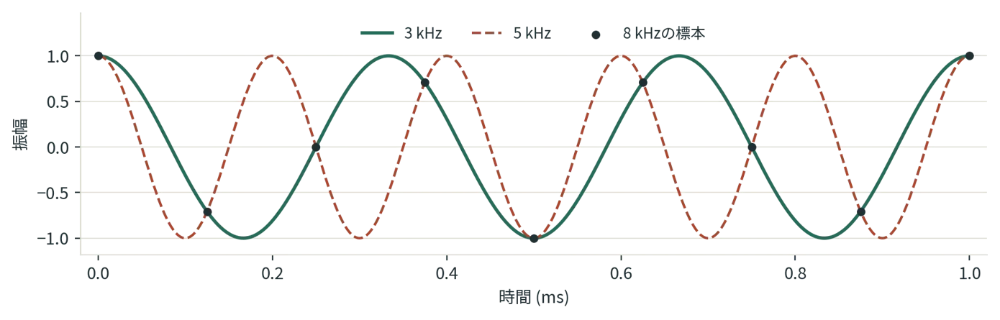

第30章 コンピューターが音を記録する仕組み
標本化・量子化・折返し。デジタル音声の基本原理。
この章で学ぶこと
- 標本化周波数とビット深度の意味を知る
- 折返し（エイリアシング）がなぜ起こるかを理解する
- DFTのビン間隔と窓の役割を知る
標本化と量子化
連続信号 を間隔 で測れば標本列 を得る。標本化周波数 は1秒当たりの個数で、44.1 kHz なら1秒に44,100個。PCMでは各標本の振幅を有限桁で符号化する。時間を離散化する標本化と、振幅を離散化する量子化は別の操作である。16ビット符号付き整数には 通りの値がある。PCM WAVの「モノラル、48 kHz、16ビット」なら1秒の波形データは バイト。ヘッダ等は別に加わる。
量子化ステップが の最近傍丸めでは、範囲内の誤差は最大 。誤差が に一様分布するという模型では平均二乗は 。積分 がこれを与える。実信号では誤差が周期信号と相関して高調波となることもある。ディザは適切な小雑音を加えて量子化誤差の信号依存性を抑える方法であり、雑音と引換えに微小信号の歪みを扱う。レンダリング途中は浮動小数点を用い、最終ビット深度へ落とす時に検討する。
別の音が同じデータになる
定理 30.1（折返しの同値類）。 複素正弦波を標本化すると、任意の整数 に対して と は全く同じ離散列を作る。
証明を読む（読まなくても先へ進めます）
。実余弦は実部を取るのでこの同値性を引き継ぎ、さらに により と が一致する。∎
たとえば 48 kHz で測ると、30 kHz の余弦は kHz、すなわち18 kHz の余弦と同じ標本になる。聴取実験では高域を避け、8 kHz で標本化した5 kHzの余弦が3 kHzと一致する例を短く比較する。ADCの前段で帯域を制限し、ダウンサンプリングの前にも新しいナイキスト周波数に十分な遷移帯域を確保する。理想矩形波を各標本で単純に符号判定して生成すると、ナイキスト周波数を超えた倍音が可聴域へ折り返す。加算合成では可聴帯域内の項だけを合成できる。
標本から復元できる条件
定理 30.2（帯域制限された信号の標本化）。 上の を区間外で0とし、 とする。、 とすれば、
この仮定では復元は一意である。ナイキスト端点にデルタ分布をもつ純正弦波はここでいう スペクトルの外にある。たとえば は全標本が0になる。実機では帯域上限を より内側に置く。
証明を読む（読まなくても先へ進めます）
長さ の区間で は直交系である。完備性は付録A。 の第 係数は 。対称部分和 は で に収束する。復元積分に を代入すると各指数項の積分は 。また各 の積分誤差は Cauchy–Schwarz により 以下なので極限を取れる。標本が一致する二つのスペクトルは全係数が一致し、完備性より零集合を除き一致する。∎

離散フーリエ変換（DFT）を証明する
個の標本 に対して
定理 30.3（逆変換と Parseval）。
証明を読む（読まなくても先へ進めます）
は なら 。それ以外は公比 の等比数列で、。逆変換式へ の定義を代入すると の項だけが残る。さらに逆変換式の絶対値二乗を について和をとると、同じ等比和によって異なる添字の交差項が消え、係数 が残る。∎
番のビンは 。 は とみなすと負の周波数を表す。48 kHz、 ならビン間隔10 Hz。ただし観測区間に整数周期が収まらないと、端の不連続性に相当する成分が他のビンへ漏れる。Hann窓は端をなめらかに抑えて漏れの遠い裾を減らすが、主ローブは広がる。FFTは同じDFTを効率よく計算するアルゴリズム群であり、典型的な2の冪長の方式では計算量が 。ゼロを足す操作は見かけの周波数点を細かくするが、観測時間や情報は増えない。 DSP Guide S14 · Puckette S10
ここだけ押さえる
- 48 kHz・16ビット・モノラルのデータは1秒で96,000バイト。
- 標本化周波数の半分を超える成分は、低い周波数に化ける。
- ゼロ詰めは見かけの点を増やすだけで、情報は増えない。